Learning Outcome
When you complete this learning material, you will be able to:
Interpret construction and process drawings.
Learning Objectives
You will specifically be able to complete the following tasks:
- 1. Interpret the information provided in orthographic, isometric, and oblique projections.
- 2. Interpret the information provided in construction drawings with sectioning and dimensioning.
- 3. Interpret the information provided in process flow drawings.
- 4. Interpret the information provided in process and instrumentation drawings (P&IDs.)
- 5. Explain the use of isometric piping system and spool drawings in piping systems.
Objective 1
Interpret the information provided in orthographic, isometric, and oblique projections.
MECHANICAL DRAWINGS
A pictorial representation is much more clear and concise than using words to describe parts and systems. Engineers use mechanical drawings before the construction of mechanical parts and systems including piping systems.
Mechanical drawings are used to communicate technical data about piping, equipment, and processes. The drawings use standardized concepts, symbols and terminology.
Plant operators need to read standard power plant and process drawings such as process flow diagrams, Process and Instrumentation Drawings (P&IDs) and pressure vessel drawings. When creating procedures for starting up processes or purging piping or vessels, a thorough knowledge of process and instrument drawings is mandatory. Operators often make drawings or sketches of machinery parts or piping systems for upgrades or modification. The drawings need to contain enough detail for the intended readers, such as other operators, engineers or trades people.
The objective of mechanical drawing is to describe accurately the shape of an engineering object such as an engine part. Other information may be indicated on the drawing such as welding, material of construction, and types of machining. Additional information is brief and often covered more extensively in other documents that accompanying the drawings. Additional documents may include: mechanical specification sheets, installation instructions, startup procedures, general operating instructions and other OEM (original equipment manufacturer) data sheets.
Orthographic Drawings
An important type of engineering drawing is the Orthographic drawing. Orthographic is a Greek word and its English equivalent is “Description at Right Angles.” If readers remember the English equivalent, they will experience less difficulty understanding orthographic rules.
Orthographic drawing is used most often and has three views. An orthographic projection (isometric) view is shown on the left side of Fig. 1. The orthographic views on the right side are the front, side, and top. The number of views selected for an object must be sufficient to provide all the information required to construct the object. The draftsperson usually selects a front view of the object which best describes the general shape of the part. The front view the draftsperson uses may not be the front view of the part as it fits into a mechanism. The front view is sometimes called a front elevation.
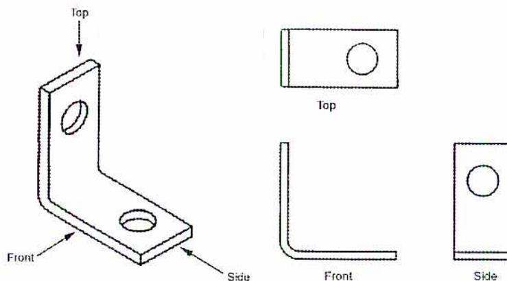
Figure 1
Isometric with Orthographic Views
Other views of an object, other than the three standard views, can also be drawn. The isometric view of the object on the right hand side of Fig. 2 may be projected in the orthographic projections shown in the left hand side. They are:
| F.V. | Front View |
| Bot.V. | Bottom View |
| R.V. | Right Side View |
| L. V. | Left Side View |
| B.V. | Back or Rear View |
| Aux. V. | Auxiliary View |
| T. V. | Top View |
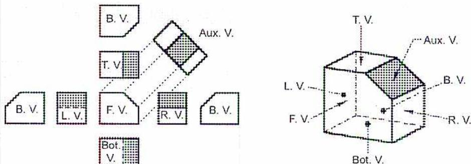
Figure 2
Systematic Arrangement of Views
Pictorial Drawings
The objective of pictorial drawings is to approximate a camera snapshot. They give the reader a three dimensional view of the object being shown. This makes it easier to visualize the object as it appears when constructed. With computer aided drafting, a pictorial view can be generated from the orthographic views. Pictorial drawings enhance the ability of the reader to visualize objects in the drawing. They are extensively used in architecture where they show how future buildings will appear before they are erected. In mechanical and power engineering, they are used for piping isometric drawings and piping spool drawings.
Although a draftsperson creates the pictorial drawings, the power engineer should be familiar with them. When an isometric or oblique view of a part is known, the orthographic views can be sketched from it.
Pictorial drawings (isometric or oblique) approximate camera snapshots and can be used to convey information to power plant trainees, labourers, visitors and generally people who are not familiar with more technical orthographic drawings. This information may refer to safety, orientation and other important uses.
Isometric Drawings And Their Relation To Orthographic Views
Fig. 3 is an example of an isometric drawing and its equivalent orthographic drawings. The pictorial isometric view on the right shows the origins of views Front A, Top B, and Right Side D.
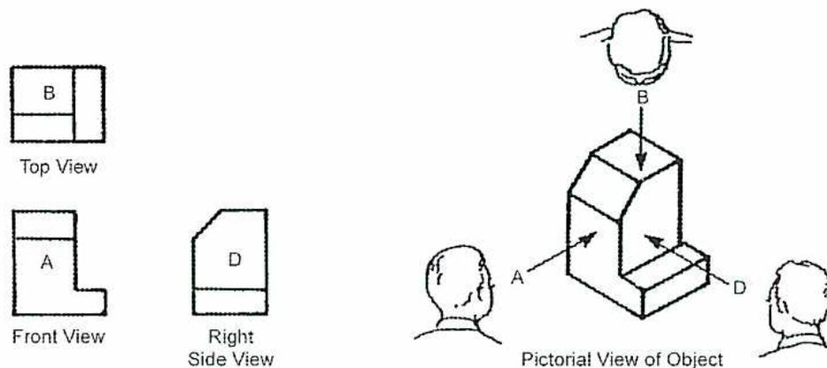
The image displays four views of a mechanical part. On the left, three orthographic views are shown: 'Top View' (labeled B), 'Front View' (labeled A), and 'Right Side View' (labeled D). On the right, a 'Pictorial View of Object' is shown in isometric perspective. Arrows labeled A, B, and D indicate the viewing directions for the orthographic views. Silhouettes of human heads are placed near the arrows to show the viewer's eye level and position for each view.
Figure 3
Orthographic and Isometric Views
The isometric view of a more detailed object is shown in Fig. 4. It is accompanied by standard orthographic views. The isometric view shows parts of the three views shown in orthographic versions. The isometric view is three-dimensional and each view of the orthographic drawing is only two-dimensional. Observe how the projection tracing lines follow the main outline of the part from one view to the other in the orthographic views.
The drilled hole is traced from the front view to the top view and to the right side view. The hole is drawn with a bold line in the front view but with a hidden feature line in the other views. From the isometric view, the hole on the top view or the right side view cannot be seen. The hole is there but cannot be shown with the visible outline line. This is where the hidden feature line (dotted line) is used. There are two more hidden feature lines, one in the front view and one in the right side view.
![Figure 4: Types of Projections. The image shows two sets of views for a mechanical part. On the left, the 'Orthographic' views include a top view (showing three rectangular sections labeled 3, 4, 5, and 6) and a front view (showing a stepped profile with a central hole, labeled 1, 2, 4, 5, 6, 7, and 8). On the right, the 'Isometric' view shows the 3D object with labels 1, 2, 3, 4, 5, 6, 7, and 8. A 'Front' view arrow points to the right side of the isometric object. The isometric view illustrates how the 3D object is represented from an angled perspective, while the orthographic views show it from directly above and the front.](8e592c58b5074d79831ff650c2c636df_img.jpg)
Figure 4
Types of Projections
A projection line can be drawn from the end of a hidden feature line to the neighbouring view and see which visible outline line it corresponds to. The projection line is drawn parallel to the existing projection lines. To assist the reader to visualize the construction of the orthographic views from the isometric view, the corresponding views are numbered.
Centre lines are used on orthographic drawings. The centre line is not part of the object itself, but like projection lines they are part of the orthographic drawing. Centre lines are mandatory where holes are drilled and where bores are turned on a lathe. They are used as axes of symmetry wherever a symmetrical axis is located on an object. For holes and bores centre lines are drawn at the centre of the circle and locate where the machinist centres his drilling bit to make the hole, or where the lathe operator centres his lathe to machine a bore.
Construction Of Isometric Drawings
Because the isometric drawings are three dimensional in a single view, their backbone consists of three axes intersecting at a common point on the paper. The point is called the origin O.
The axes are drawn as shown in Fig. 5. Axes OC, OB, make a \( 30^\circ \) angle with the horizontal. Axis OA is vertical and perpendicular (or at \( 90^\circ \) to the horizontal base line).
All the horizontal lines of the front view are parallel to OC. All the horizontal lines of the right side view are drawn parallel to OB. The vertical lines of both front and right side views are parallel to OA. The sizes in this example are drawn twice the orthographic sizes.
The vertical lines of the top view are parallel to OB while the horizontal lines of the top view are parallel to OC. The slanted line EF on the right side view presents some difficulty because it must be placed parallel to none of the isometric axes. The person drawing the view visualizes the object to be drawn. The auxiliary thin lines used in drawing this isometric drawing, are left as a guide to how the isometric was drawn.
![Figure 5: Isometric Construction. The diagram shows an isometric drawing of a stepped block with a slanted top edge EF. The drawing is based on three axes originating from point O: a vertical axis OA, and two diagonal axes OB and OC at 30-degree angles to the horizontal. Construction lines are shown to illustrate how the object's dimensions are transferred from orthographic views to the isometric view. Three small diagrams on the left show the 'Top View' (a rectangle with a horizontal line), the 'Front View' (an L-shape), and the 'Right Side View' (a rectangle with a slanted top edge EF). The isometric drawing itself is a 3D representation of these views, with vertices labeled E and F to show the slanted edge in perspective.](67b83c4adaaa4de02d367168308deb2a_img.jpg)
Figure 5
Isometric Construction
Detailed piping drawings are often shown in the isometric view. An example of an isometric piping drawing is shown in Fig. 6. As with all isometric views, the piping is drawn as vertical or at a \( 30^\circ \) angle to the horizontal.
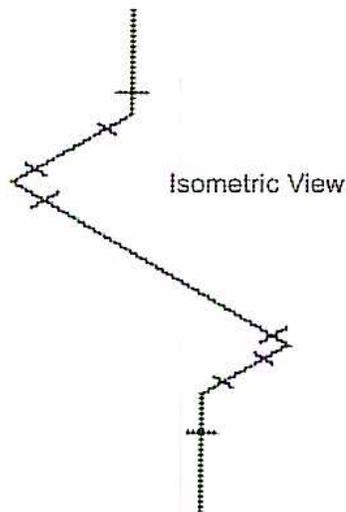
Figure 6
Isometric View Applied to Piping
Oblique Drawings
Although the oblique pictorial drawing is not used as often as isometric pictorial drawings, it does have some features that make it useful for specific applications. In the oblique pictorial drawing (Fig. 7), the axis COC is horizontal, axis OA is vertical and axis OB is the receding axis drawn at a convenient angle, usually \( 30^\circ \) .
The object drawn in isometric view in Fig. 5 is drawn as an oblique pictorial drawing in Fig. 7. Except for the slanted lines EF, the front view is identical to the orthographic method.
The horizontal lines of the right side view are drawn parallel to axis OB. The vertical lines of the right side view are parallel to OA. The horizontal lines of the top view are parallel to COC. The vertical lines of the top view are parallel to OB. The auxiliary lines are left in the drawing to visualize how this oblique drawing was made.
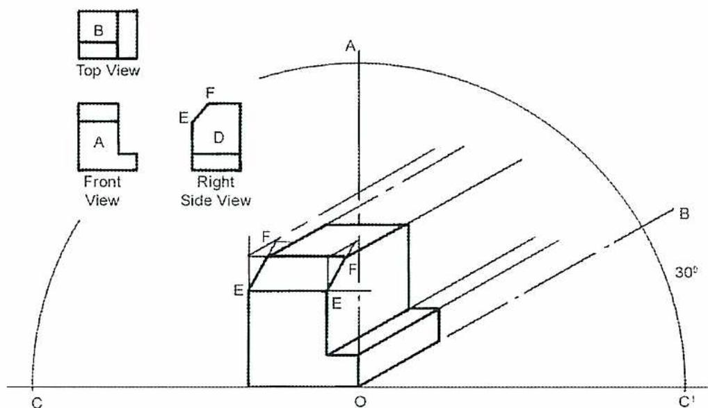
The diagram illustrates the construction of an oblique drawing. A 3D block is shown with its front face on a vertical plane. Construction lines extend from the front face at a 30-degree angle to the horizontal, indicated by an arc and the label 30°. Points A, B, C, D, E, F, O, and C' are labeled to show the projection of points from the front face to the receding edges. To the left, three orthographic views are shown:
- Top View: Shows a rectangle with a smaller rectangle (B) on top of it.
- Front View: Shows an L-shaped profile with a horizontal line (A) near the top.
- Right Side View: Shows a profile with points E, F, D, and a horizontal line at the bottom.
Figure 7
Oblique Construction
An example of an oblique drawing applied to a piping system is shown in Fig. 8. The same method is used, with all lines being vertical, horizontal, or at a 30° angle to the horizontal.
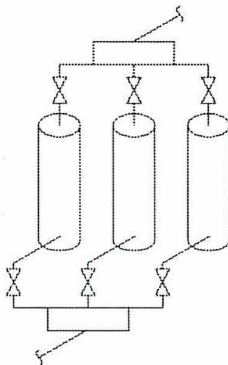
This diagram shows an oblique drawing of a piping system. It features three vertical pipes connected to a common horizontal header at the top and a common horizontal base at the bottom. Each pipe has a valve at both the top and bottom connections. The drawing uses oblique construction lines at 30-degree angles for the depth of the pipes and their connections. Section lines X-X and Y-Y are indicated with arrows pointing to the right.
Figure 8
Oblique Piping Drawing
Partial Views
Using the orthographic method of drawing it is not always necessary to present a part in the standard three views if all the key information is conveyed using one or two views.
An example is shown in Fig. 9. The side view is not included as the front view and the top view have conveyed all information clearly.
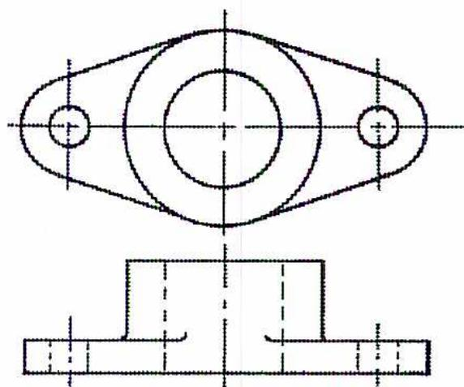
The image displays two orthographic views of a mechanical part. The top view is an oval shape with a central circle and two smaller circles on the left and right sides. The front view is a rectangular base with a central rectangular feature and two smaller rectangular features on the sides. Both views include center lines and hidden lines to indicate internal features.
Figure 9
Top and Front Views Only
Objective 2
Interpret the information provided in construction drawings with sectioning and dimensioning.
SECTIONING
Orthographic Drawings (description at right angles) can sufficiently describe the shape and dimensions of objects whose details are visible externally. For example, a piping network may require a very complicated drawing yet all its bends, curves and angles are visible on the outside. A more complicated part like a bearing, seal, or pump has a number of internal shapes and components that are not clearly illustrated using only hidden lines. To show all such interior details with hidden feature lines is not only difficult but almost impossible. For internal details another concept is added to the orthographic method called “Sectioning.”
The part in Fig. 10 is in its isometric view. For a clearer view of the internal details of the object, an imaginary saw is used to cut through the object. The cut is made along a chosen line that reveals a new front view that is drawn to illustrate key internal features. The cut is imaginary but it can be visualized. After the cut is completed, the rear half is used as the front view. The holes appear with solid visible lines, not hidden feature lines. Because they are now solid lines dimensions can be added to them. The 45° inclined hatching or section lines cover the surface where the imaginary saw cut the metal.
![Figure 10: Section Drawing. The figure shows an isometric view of a rectangular block with two circular holes on its top surface. A vertical cutting plane line is drawn through the center of the block. To the right, the 'Section A-A' is shown, which is a front view of the block after it has been cut. The internal features, including the two circular holes, are now visible as solid lines. The cut surfaces are filled with 45-degree inclined hatching. Labels include 'Cutting Plane Line', 'A', 'Arrow Indicates Direction of Sight', 'Section A-A', 'A Section Drawing', and 'Front'.](b5b16a821754dab72447d00e17ee376a_img.jpg)
The image illustrates the process of sectioning an isometric drawing. On the left, an isometric view of a rectangular block is shown with two circular holes on its top surface. A vertical cutting plane line is drawn through the center of the block. To the right, the 'Section A-A' is shown, which is a front view of the block after it has been cut. The internal features, including the two circular holes, are now visible as solid lines. The cut surfaces are filled with 45-degree inclined hatching. Labels include 'Cutting Plane Line', 'A', 'Arrow Indicates Direction of Sight', 'Section A-A', 'A Section Drawing', and 'Front'.
Figure 10
Section Drawing
When the top view is drawn it indicates where the cutting took place. The cut was along the horizontal axis of symmetry shown by line AA (extra heavy and bold) with the two arrows. It shows which part is seen in the front sectional view. A basic rule for sections is that a visible outline line cannot go over a sectioned area. Once the object has been sectioned, the use of most hidden lines can be eliminated. Solid lines are used across areas only to outline the object. Other examples are illustrated in Fig. 11 and Fig. 12.
Compare the drawing without sectioning (Fig. 11) and the one with sectioning (Fig. 12). The drawing with sectioning is much easier to visualize and is easier to use for a tradesman producing this object in a machine shop. The interior of the part is clearer and more visible in the sectional drawing.
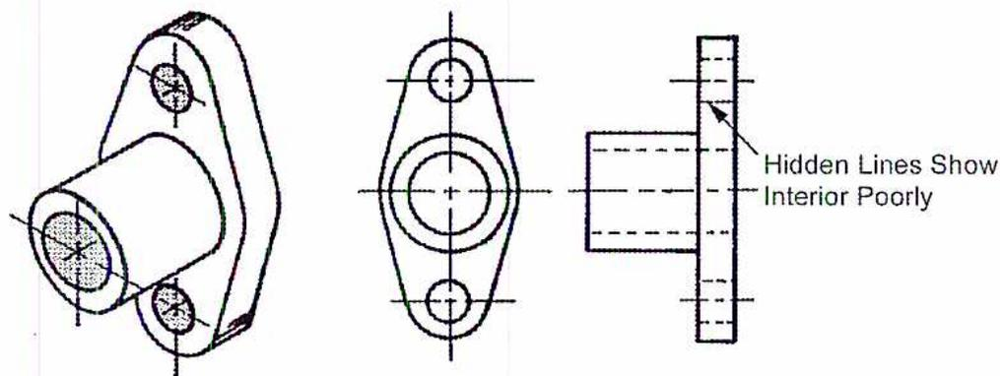
Figure 11
Side View Not Sectioned
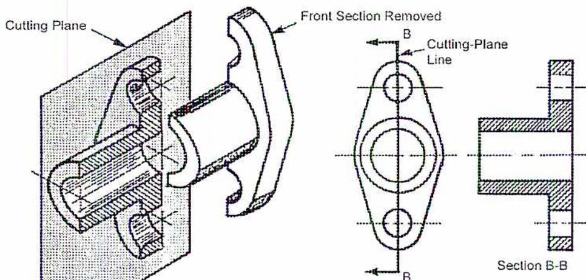
Figure 12
Side View in Full Section
Another drawing of the part is shown in Fig. 13, using half the sectioning. This method also produces a clear and visible view of the internals of the part. The section line AA indicates how the section was cut.
![Figure 13: Side View in Half Section. The diagram shows a 3D perspective view of a mechanical part on the left, with a 'Cutting Plane' indicated by a vertical line. The 'Front Section Removed' is shown as a separate piece. An arrow labeled 'Direction of Sight' points to the right. On the right, there is a 2D front view of the part, which is a half-section. It shows internal features like holes and a slot. A vertical 'Cutting-Plane Line' is marked with 'A' at the top and bottom. Arrows at the top indicate the 'Direction of Sight'. Below the front view is 'Section A-A', which is a cross-sectional view showing the internal structure of the part, including a horizontal slot and a vertical hole.](5f8af0cfcf796986f40e70571bb950f5_img.jpg)
Figure 13
Side View in Half Section
DIMENSIONING
Valuable information contained on drawings includes the size of the object and the location of its components. Dimensions are used to indicate the size of the object and its components. Standard drafting practices are used to keep the dimensions of drawings consistent. Computerized drafting has increased the consistency of application of dimensions.
Dimensions are placed on drawings using extension lines, dimension lines, leader lines and arrowheads.
Unidirectional System of Dimensioning
In the unidirectional system, all the dimensions are oriented and read from left to right. The dimensions are placed in a horizontal position. It is the preferred system because it is the easiest to read. An example of unidirectional dimensioning is shown in Fig. 14.
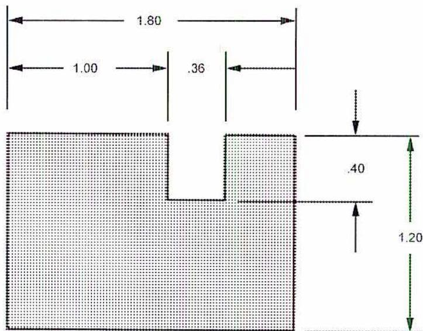
Figure 14
Unidirectional System of Dimensioning
Aligned System of Dimensioning
In the aligned system of dimensioning, the dimensions are placed on the drawing from the bottom or right side of the print. The dimensions are written in the direction the dimension lines are running. The dimensions are either horizontal, vertical, or at an angle. The dimensions can be slightly more difficult to read than the unidirectional system. An example of aligned dimensioning is shown in Fig. 15. Notice the difference in the 1.20 and 0.40 orientations between Fig. 14 and Fig. 15.
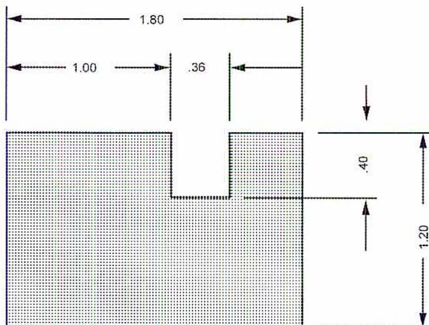
Figure 15
Aligned System of Dimensioning
Fig. 16 shows a pressure vessel elevation view (front view is sometimes called the elevation) and end view. Some dimensions are included on this drawing showing the relative locations of the nozzles. Notice the reference lines do not touch the vessel. N1 and N2 are nozzles used to connect piping to the vessel, and C1 is a coupling for attaching the drain connections to the vessel.
![Figure 16: Pressure Vessel Drawing with Dimensions. The figure contains two views of a horizontal pressure vessel. The 'End View A-A' on the left shows the circular cross-section with nozzle N1 at the top (0°), nozzle N2 at the right (90°), and coupling C1 at the bottom (180°). Arcs indicate 45° angles from the vertical centerline to points A and B. The 'Elevation View' on the right shows the vessel's length and nozzle positions. Horizontal dimensions from the left end are: 1.931 m to the center of C1, 2.44 m to the tangent point of the right head, 1.82 m to the center of N1, 1.22 m to the 'REF. LINE' (a vertical dashed line), and 0.838 m from the 'REF. LINE' to the center of N2. A vertical dimension of 0.813 m is shown from the vessel's centerline to the center of C1. Section lines A-A and B-B are indicated.](eaae122ace5c0d761133c6ce971a6ffd_img.jpg)
Figure 16
Pressure Vessel Drawing with Dimensions
Fig. 17 is a drawing of a boiler and economizer with ducting and supports. Dimensions are provided for the major components. For example some of the dimensions on the drawing are:
| Steam drum diameter | 1.52 m |
| Steam drum wall thickness | 12.38 cm |
| Mud drum diameter | 1.07 m |
| Mud drum wall thickness | 8.57 cm |
| Floor to centre of mud drum | 1.83 m |
| Floor to centre of boiler outlet duct | 4.11 m |
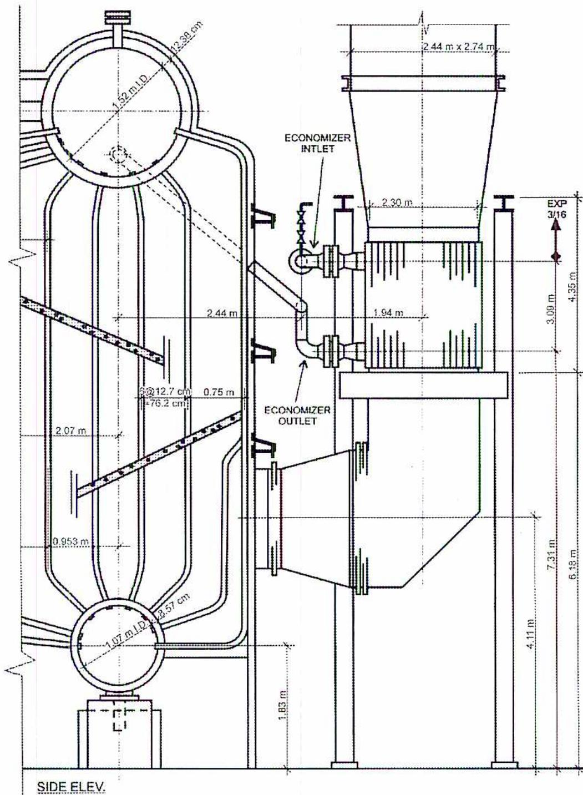
This technical drawing shows the side elevation of a boiler and economizer assembly. The boiler is a large vertical vessel with two circular drums at the top and bottom. The top drum is labeled "1.52 m I.D. 12.38 cm" and the bottom drum is labeled "1.07 m I.D. 8.57 cm". The boiler is supported by a base. To the right of the boiler is an economizer unit, which is a rectangular box containing a series of horizontal tubes. The economizer has an "ECONOMIZER INLET" at the top and an "ECONOMIZER OUTLET" at the bottom. The entire assembly is shown in a "SIDE ELEV." view.
Dimensions and labels provided in the drawing include:
- Horizontal dimensions: 2.44 m (width of boiler section), 1.94 m (width of economizer), 2.30 m (width of economizer inlet/outlet), 2.44 m x 2.74 m (width of exhaust duct), 0.75 m, 0.953 m, 2.07 m, 6 @ 12.7 cm = 76.2 cm (spacing of boiler tubes).
- Vertical dimensions: 1.83 m (height of boiler base), 4.11 m, 7.31 m, 6.18 m, 3.09 m, 4.35 m, and an expansion joint labeled "EXP 3/16".
- Labels: "ECONOMIZER INLET", "ECONOMIZER OUTLET", "SIDE ELEV.".
Figure 17
Side Elevation of Boiler and Economizer
Objective 3
Interpret the information provided in process flow drawings.
PROCESS FLOW DRAWINGS (PFD)
The process flow diagram is a simplified schematic of a plant, or portion of a plant, which shows only the major equipment items and the major process flow streams. A process flow diagram lists the prime function of the major equipment and the reference numbers of the material balance table. The material balance table provides the pressure, temperature, composition, and flow rates of the streams shown. Process flow diagrams are not to scale, and only show the equipment sequence in the process flow, not the equipment's relative locations.
Purpose of Process Flow Drawings
Process Flow Drawings are a valuable reference for plant operating and engineering staff. They assist in understanding the details of the process and its instrumentation control system, and they provide a valuable source of information for training of plant personnel. The PFD shows the general layout of the process lines, equipment, and major control points. It includes flow rates, pressures, and temperatures. This provides an overview of the processes and design parameters.
Layout of the Flow Diagram
A separate flow diagram is prepared for each plant process. If a single sheet is too crowded, more sheets may be used. For simple processes, more than one process may be shown on a sheet. Process lines have the rate and direction of flow and other required data such as pressures and temperatures noted. Main process flows preferably go from the left of the sheet to the right. Line sizes are not shown on a flow diagram.
The name and specific identifying tag number of each piece of equipment is located at the top or bottom of the page directly above or below the equipment on the drawing (e.g. V-101 Debutanizer Tower). With flow diagrams, simplicity in presentation is important.
A PFD is not drawn to scale and does not show the exact orientation of equipment, except for “order of occurrence.” Typical details shown on process flow diagrams include:
- • Major equipment with process line orientation
- • Main piping and direction of flow
- • Process Equipment proper name and numbering. (Optional items are dimensions, and normal capacity)
- • Operating pressure, temperature, and level values (at the major vessels or control points)
- • Heat exchanger duties, number of passes, process orientation (shell or tube side), and general configuration
- • Pump and or compressor flows and rates (often at major control points)
- • Major instrumentation such as major control valve locations, and basic instrumentation orientation
- • Main pressure control valves and pressure relief valves (PRV).
A process flow diagram is shown in Fig. 18. It shows the main process flows for a section of a process plant. The temperatures of the feed and main control points are shown. The names of the major pieces of equipment are shown at the top of the drawing. The pumps are identified at the bottom of the drawing.
![Process Flow Diagram (Figure 18) showing a distillation system. The diagram includes a Feed stream (1755 Kpa @ 99°C) entering a Depropanizer (V-101). The bottom of V-101 is heated by a Reboiler (E-101) using a Heating Medium (See Utility Flow Sheet). The overhead vapor from V-101 (52°C) is cooled in an Overhead Condenser (E-102) using Cooling Water (See Utility Flow Sheet). The condensed liquid is collected in a Reflux Accumulator (V-102) at 1655 Kpa @ 48°C. A portion is returned as reflux through a pump (P-101A & 101B), and the remainder is taken as Product to Storage. A Flare line is connected to the top of V-102. Various control loops (LC, PC) and instrumentation are shown throughout the system.](4356776ca004ecba5d599667a155d7d4_img.jpg)
The diagram illustrates a process flow for a distillation unit. A feed stream enters the bottom of a distillation column (V-101). The column has a reboiler (E-101) at the bottom and an overhead condenser (E-102) at the top. The overhead vapor is cooled and collected in a reflux accumulator (V-102). A portion of the liquid is returned to the column as reflux, and the remainder is collected as product. The diagram includes various control loops and instrumentation, such as level controllers (LC) and pressure controllers (PC). The feed stream is labeled with a pressure of 1755 Kpa and a temperature of 99°C. The overhead vapor is labeled with a temperature of 52°C. The reflux accumulator is labeled with a pressure of 1655 Kpa and a temperature of 48°C. The reboiler is labeled with a temperature of 118°C. The heating medium for the reboiler and the cooling water for the condenser are both referenced to utility flow sheets. The pumps are identified as P-101A & 101B for product and reflux.
Figure 18
Process Flow Diagram
Objective 4
Interpret the information provided in process and instrumentation drawings (P&IDs.)
THE MECHANICAL FLOW DIAGRAM
In most plants the mechanical flow diagram is called a Process and Instrument Diagram or for short P&ID. The P&ID differs from the PFD in that the P&ID includes equipment specific details related to their design, construction, operation and control strategies. The P&ID visually summarizes all the system and process calculations that are based on flow rates, pressures, temperatures, and general layout of the process flow diagram. The P&ID is not drawn to scale and does not show the exact orientation of equipment, except for “order of occurrence.” The detail shown on mechanical flow diagrams includes:
- • Vessel size, design pressure and temperature rating, insulation requirements, and all connections
- • Heat exchanger duties, number of passes, nozzle types and sizes, insulation requirements, and general configuration
- • Pump and compressor details, including power, and external mechanical details, controls, instrumentation, and utilities
- • Flow lines complete with line identification and specifications including: size, insulation requirements, valve sizes and types, and connections (threaded, flanged, and so on)
- • Instrumentation including meter runs, flow recorders, temperature indicators and recorders, pressure and level controllers, control valves, pressure indicators and recorders, level gauges, safety relief valves, thermometer wells and shutdown devices. The location and types of controllers, alarm and shutdown systems, and control strategies may also be shown.
Purpose Of The Mechanical Flow Diagram
Mechanical flow diagrams are used for the following purposes:
- 1. During the design and pre-construction phase, P&IDs enable the engineering contractor to make a complete mechanical equipment, instrument, valve, and controller takeoff (detailed list), on which to base a cost estimate for bid and contract purposes. The P&IDs show graphically the results of the mechanical design engineer’s work. They include all that is incorporated in the completed construction project. The mechanical flow diagram and the process flow diagram are usually sufficient to define the scope of a project. These lists may also be generated by computer as the drawings are produced.
- 2. During construction, P&IDs provide the field construction and inspection personnel with a reference to ensure that all equipment, instrumentation, piping, valves, insulation, are properly located and interrelated.
- 3. After construction, P&IDs are an invaluable operational and training reference for plant operating and engineering staff. They assist in understanding the details of the process, its instrumentation control system, and the relationship between process, utility, and electrical systems. They provide an index to detailed piping, isometric drawings, and equipment or instrument data sheets.
P&ID Details
The pressure and temperature values listed on the Process Flow Diagram are not shown on the mechanical P&ID. An example of a P&ID drawing is shown in Fig. 20 indicating the same section of a process plant shown on the drawing in Fig. 18. The P&ID shows:
- • Piping identification numbers
- • Piping Sizes
- • All instrumentation
- • Piping details (including vent and drain valves)
Often a P&ID details only several major pieces of equipment. The P&ID in Fig. 21 has only one major piece of equipment, the pressure vessel V-2 (Sales Gas Scrubber) and its piping and instrumentation details. The following information is found on this P&ID:
- • The three-phase (natural gas, hydrocarbon liquid, and glycol-water phase) inlet enters the vessel through an 8-inch (203.2 mm) line and flanged connection. The inlet line carries \( 2\frac{1}{2} \) inches (63.5 mm) of cold insulation (note the symbol) versus the vessel insulation of 4 inches (101.6 mm), shown with a different symbol.
- • The vapour stream passes through a demister pad and leaves the top of the vessel, through an 8-inch (203.2 mm) flanged connection, into an 8-inch (203.2 mm) line. Hydrocarbon liquid leaves the bottom of the vessel through a 2-inch (50.8 mm) flanged connection into a 2-inch (50.8 mm) line, BA-G-10.
- • The glycol-water mixture leaves through a \( 1\frac{1}{2} \) -inch (38.1 mm) flanged connection into \( 1\frac{1}{2} \) -inch (38.1 mm) BA-Q-9 Also provided is a 1-inch (25.4 mm) flanged drain connection having a 1-inch socket weld gate valve in series with a 1-inch (25.4 mm) screwed globe valve.
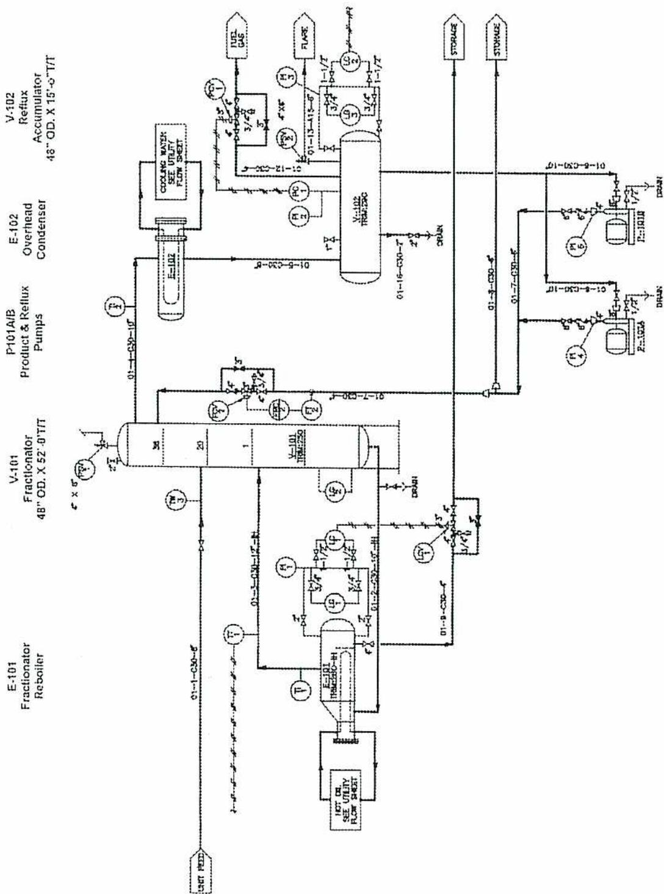
The P&ID drawing illustrates a distillation process. The main components and their connections are as follows:
- UNIT FEED : Enters the bottom of the V-101 Fractionator (48" OD. X 52" HT). A temperature sensor (TI) is located on this line.
- V-101 Fractionator : A vertical column with three internal sections labeled 1, 2, and 3. It has a bottom outlet to the reboiler and an overhead outlet.
- E-101 Reboiler : Connected to the bottom of V-101. It has a "HOT OIL" inlet with a flow sheet note and a return line to the column. Temperature (TI) and level (LI) sensors are present.
- Overhead Line : From the top of V-101, passing through a control valve (PV) and a temperature sensor (TI), then through P-101A/B Pumps .
- E-102 Overhead Condenser : Receives overhead from the pumps. It has a "COOLING WATER" inlet with a flow sheet note and a return line. Temperature (TI) and level (LI) sensors are present.
- V-102 Reflux Accumulator : Receives condensed overhead from E-102. It has a "REFLUX" outlet returning to the top of V-101 and a "PRODUCT" outlet. Level (LI) and temperature (TI) sensors are present.
- Product Line : From the bottom of V-102, passing through a control valve (PV) and a temperature sensor (TI), then through another set of P-101A/B Pumps .
- Storage Tanks : Two tanks labeled "STORAGE" receive product from the second set of pumps. Level (LI) sensors are present on the lines to these tanks.
- Instrumentation : Various sensors are shown, including Temperature Indicators (TI), Level Indicators (LI), and Pressure Indicators (PI). Control loops are indicated by lines connecting sensors to control valves (PV).
- Drains : Two drain lines are shown, one from the bottom of E-102 and another from the bottom of V-102.
- Flange Connections : Various flange connections are indicated with numbers like 1, 2, 3, 4, 5, 6, 7, 8, 9, 10, 11, 12, 13, 14, 15, 16, 17, 18, 19, 20, 21, 22, 23, 24, 25, 26, 27, 28, 29, 30, 31, 32, 33, 34, 35, 36, 37, 38, 39, 40.
Figure 20
P&ID Drawing
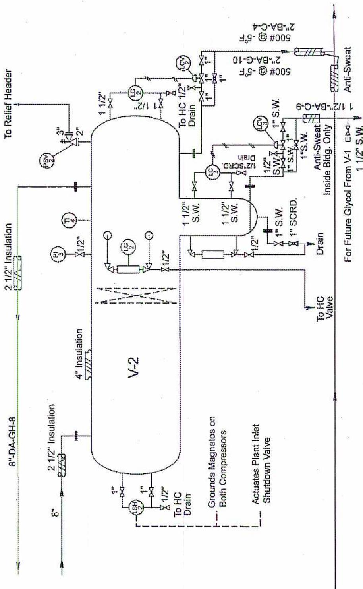
This mechanical flow diagram illustrates the piping and instrumentation for vessel V-2. The diagram includes the following components and details:
- Vessel V-2: The central component, shown with a dashed centerline indicating its internal structure.
-
Insulation:
- 8" DA-GH-8 insulation on the left side.
- 2 1/2" insulation on the top left.
- 4" insulation on the top right.
- 1 1/2" S.W. (Stainless Steel Wool) insulation on the right side.
-
Piping and Connections:
- An inlet pipe on the left connects to the bottom of the vessel, passing through 8" and 2 1/2" insulation sections.
- A pipe on the top left connects to the top of the vessel, passing through 2 1/2" insulation.
- A pipe on the top right connects to the top of the vessel, passing through 4" insulation.
- A pipe on the right connects to the bottom of the vessel, passing through 1 1/2" S.W. insulation.
- Outlets at the bottom right lead to a "Relief Header" and a "Drain".
- Additional piping on the far right is labeled "For Future Glycol From V-1" and includes "Anti-Sweat" insulation.
-
Instrumentation:
- Pressure transmitter PT-1 is connected to the top left pipe.
- Temperature transmitter TT-1 is connected to the top pipe.
- Level sensor LS-1 is connected to the top right pipe.
- Pressure transmitter PT-2 is connected to the top left pipe near the Relief Header.
- Level transmitter LT-2 is connected to the top pipe near the Relief Header.
- Level transmitter LT-3 is connected to the right pipe.
- Pressure transmitter PT-3 is connected to the right pipe.
-
Annotations:
- "To HC Drain" is noted near the bottom left inlet.
- "Grounds Magnets on Both Compressors" is indicated by a dashed line.
- "Actuates Plant Inlet Shutdown Valve" is indicated by a dashed line.
- "Anti-Sweat" insulation is specified for the future glycol line.
- "Inside Bldg. Only" is noted for the future glycol line.
Figure 21
Mechanical Flow Diagram
Instrumentation details on the vessel and shown on the P&ID in Fig. 21 include:
- • One level gauge (LG-2) isolated from the vessel by angle valves and capable of being drained through \( \frac{1}{2} \) -inch (12.7 mm) gate valves
- • Two level controllers (LC-2 and LC-3): LC-2 controls the hydrocarbon liquid level through 1 inch (25.4 mm) LCV-2 (level control valve) and is isolated from the vessel by two \( 1\frac{1}{2} \) -inch (38.1 mm) screwed plug valves; LC-3 is isolated from the vessel by two \( 1\frac{1}{2} \) -inch (38.1 mm) socket weld gate valves
- • One high level shutdown controller, LSH-2 (level switch high), which is capable of shutting down the whole plant by stopping the refrigerant compressors through a magneto ground, and shutting off flow to the plant by closing the inlet emergency shutoff valve
- • One pressure indicator, PI-3, isolated by a \( \frac{1}{2} \) -inch (12.7 mm) gate valve and one temperature indicator, TI-4
- • One safety relief valve, 2 inch x 3 inch (50.8 mm x 76.2 mm) PSV-2, with a flanged inlet and outlet
Mechanical flow diagrams show details such as the level control valve stations with isolating block valves, bypass valve, and \( \frac{1}{2} \) -inch pressure bleed valve. All piping details are included on a P&ID drawing, including vents, drains, and gauges.
P&ID Symbols
Mechanical drawings come in sets for a particular plant or section of a larger plant. The set of drawings includes a legend showing all the symbols used in the drawing. Fig. 22 shows a sample of a list of piping symbols. It includes:
- • Valve Symbols - these symbols identify different types of valves such as globe valves, plug valves, control valves, and ball valves; each type of valve has its own symbol
- • Line Symbols - these symbols identify different types of piping, such as normal piping, instrument air lines, and instrument and electrical lines
- • Flow Diagram Abbreviations - these abbreviations stand for standard terms that are used on P&ID drawings; some examples are NO for normally open for valves, SO for steam out, and CSO for car seal open
- • Miscellaneous Symbols - they are used for specific items that are not common on all P&ID drawings; examples are spectacle blinds and specialty piping items
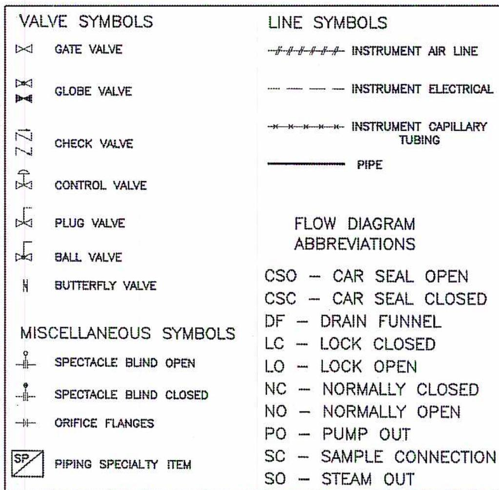
| VALVE SYMBOLS | LINE SYMBOLS |
|---|---|
| GATE VALVE | INSTRUMENT AIR LINE |
| GLOBE VALVE | INSTRUMENT ELECTRICAL |
| CHECK VALVE |
INSTRUMENT CAPILLARY
TUBING |
| CONTROL VALVE | PIPE |
| PLUG VALVE | |
| BALL VALVE | |
| BUTTERFLY VALVE | |
|
FLOW DIAGRAM
ABBREVIATIONS |
|
| CSO — CAR SEAL OPEN | |
| CSC — CAR SEAL CLOSED | |
| DF — DRAIN FUNNEL | |
| LC — LOCK CLOSED | |
| LO — LOCK OPEN | |
| NC — NORMALLY CLOSED | |
| NO — NORMALLY OPEN | |
| PO — PUMP OUT | |
| SC — SAMPLE CONNECTION | |
| SO — STEAM OUT | |
Figure 22
P&ID Symbols
Because P&IDs contain instrumentation data, a list of instrumentation symbols is also included with the piping symbols. Fig. 23 shows a list of P&ID instrumentation symbols. It includes symbols for flow, temperature, level and pressure instruments. There are also symbols for miscellaneous items such as transmitters and hand control valves. Symbols for board-mounted and locally-mounted instruments are also shown. The board-mounted (control room) instruments appear as circles with horizontal lines through them. The locally or field mounted instruments are circles with no line.
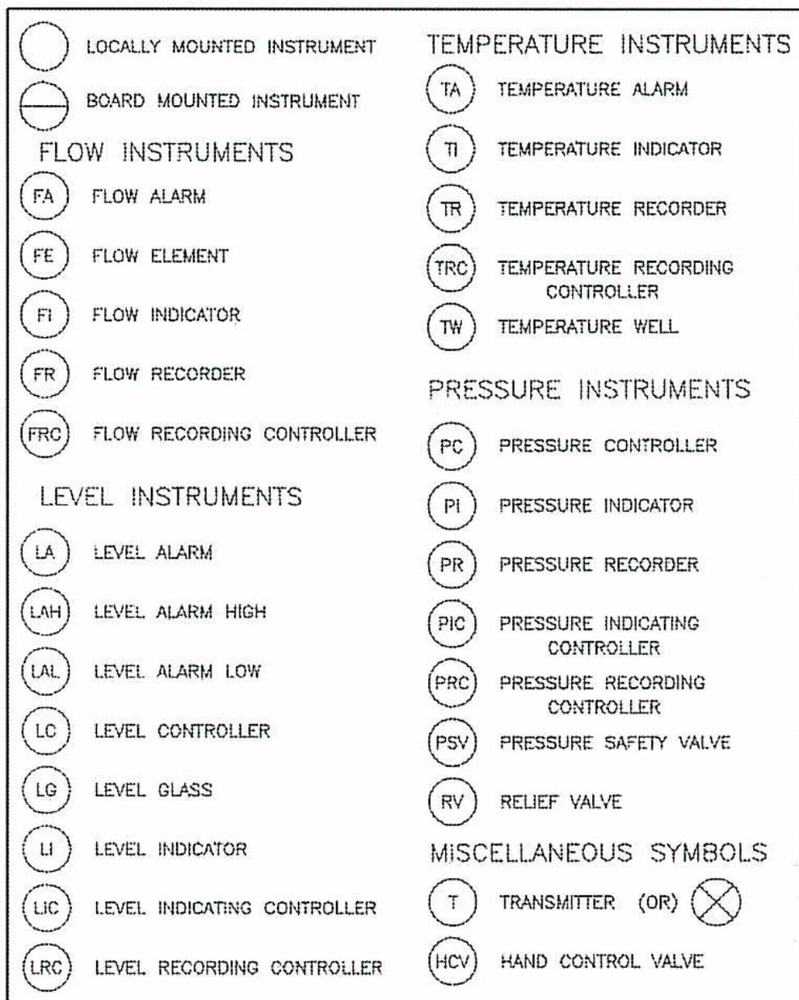
|
LOCALLY MOUNTED INSTRUMENT
BOARD MOUNTED INSTRUMENT FLOW INSTRUMENTS FLOW ALARM FLOW ELEMENT FLOW INDICATOR FLOW RECORDER FLOW RECORDING CONTROLLER LEVEL INSTRUMENTS LEVEL ALARM LEVEL ALARM HIGH LEVEL ALARM LOW LEVEL CONTROLLER LEVEL GLASS LEVEL INDICATOR LEVEL INDICATING CONTROLLER LEVEL RECORDING CONTROLLER |
TEMPERATURE INSTRUMENTS
TEMPERATURE ALARM TEMPERATURE INDICATOR TEMPERATURE RECORDER TEMPERATURE RECORDING CONTROLLER TEMPERATURE WELL PRESSURE INSTRUMENTS PRESSURE CONTROLLER PRESSURE INDICATOR PRESSURE RECORDER PRESSURE INDICATING CONTROLLER PRESSURE RECORDING CONTROLLER PRESSURE SAFETY VALVE RELIEF VALVE MISCELLANEOUS SYMBOLS TRANSMITTER (OR) HAND CONTROL VALVE |
Figure 23
P&ID Drawing Instrumentation Symbols
Objective 5
Explain the use of isometric piping system and spool drawings in piping systems.
ISOMETRIC PIPING DRAWINGS
When more construction detail is needed than is found on P&ID drawings, isometric piping drawings are used. They have more detail on things like piping lengths, joints, valves and pipe fittings. The pipe line numbers from the P&ID are used to reference the isometric drawings. The isometric view shows three sides of the piping in one practical and easy to read view. A typical isometric piping drawing is shown in Fig. 24. The horizontal lines are drawn at angles \( 30^\circ \) from the horizontal, but vertical lines remain vertical.
![Figure 24: Isometric Piping Drawing. This technical drawing shows a 3D isometric view of a piping system. It includes various components such as a 'Slip-On Flange', a 'Weld-Neck Flange', a 'Valve ID & No' (labeled KD30183-002), and a 'PCV' (Pressure Control Valve) labeled 108. The drawing is annotated with 'Line No.' (KD30183-001, KD30183-002, KD30183-003, KD30183-004, KD30183-005), 'Spool No.', 'Flow Direction', 'Flange Face Elevation', 'Field Weld' (F.W.), 'Size' (e.g., 2 1/2), 'Size & Type', 'Size & Pressure Rating', 'Base Suppt Type #4', and 'Center Line Elevation'. A 30-degree angle is indicated between the horizontal and the inclined pipe sections.](67f9de2f1a2e5acf0d35a9adbcbd2d22_img.jpg)
Figure 24
Isometric Piping Drawing
Tradesmen use isometric drawings for constructing and repairing the piping systems. All piping components such as flanges, valves, piping, and pipe fittings are shown. More detailed information than is provided on the isometric drawing can be found on the spool drawings and the bill of materials that accompanies the spool drawing.
Piping spool drawings, also called shop fabrication drawings, are separate drawings incorporating all the dimensions, material specifications, and information needed to fabricate the piping spool.
Piping Spool Drawings and Bills of Materials
Sections of the piping on the isometric drawings are labelled, such as KD30\83 – 004 on Fig. 24. The label refers to the piping spool drawing KD30/83 – 004.
An isometric spool drawing is shown in Fig. 25.
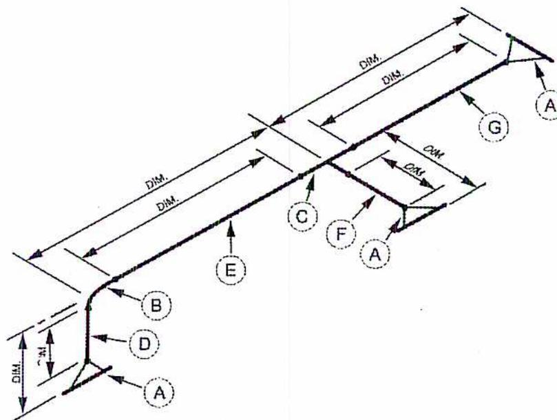
An isometric drawing of a piping spool. The drawing shows a main horizontal pipe with several vertical and angled branches. Various dimensions are indicated with arrows and the label 'DIM.'. The drawing is annotated with letters in circles: 'A' at the ends of the main pipe, 'B' and 'D' at the base of a vertical branch, 'E' on the main pipe, 'C' and 'F' on a horizontal branch, and 'G' on an angled branch. The drawing is a technical illustration of a piping assembly.
Figure 25
Isometric Piping Spool Drawing
Isometric piping spool drawings reference flanges, piping and fitting details. The materials are itemized on a bill of materials for each spool drawing. An example of a bill of materials for spool drawings is shown in Fig. 26. The bill of materials is used for construction of the piping on the spool drawing and for repairs to existing piping. Included on the bill of materials are such details as the quantity and type of fittings, flanges, bolts and gaskets. The bill of materials may be on the spool drawing or on a separate sheet.
| Bill of Materials for Spool Drawing No. KD30\83 - 004 | ||
|---|---|---|
| Item No. | Quantity | Description |
| Flanges | ||
| A | 3 | 6" (150 mm) 150# R.F.W.N. (STD BORE) |
| Fittings | ||
| B | 1 | 6" (150 mm) STD. L.R. 90 DEG. ELL |
| C | 1 | 6" (150 mm) STD. TEE |
| Pipe | ||
| D | 1 | 6" X 1° - 4" (150 mm X 406.5 mm) SCH 40 |
| E | 1 | 6" X 6° - 10" (150 mm X 2083 mm) SCH 40 |
| F | 1 | 6" X 2° - 0" (150 mm X 609.6 mm) SCH 40 |
| G | 1 | 6" X 5° - 9" (150 mm X 1752.6 mm) SCH 40 |
| Other | ||
Figure 26
Bill of Materials
The piping spool drawing may also appear as a single line orthographic spool drawing as shown in Fig. 27. Another form for the spool drawing is the double line orthographic spool drawing shown in Fig. 28. These views are of the same piping spool that is shown in Fig. 25. The reference letters refer to the same bill of materials. The double line drawing is more graphic than the single line drawing, showing two dimensions.
![Figure 27: Single Line Orthographic Spool Drawing. This technical diagram shows two views of a pipe spool using single-line representation. The 'PLAN VIEW' at the top shows a horizontal line with a circle on the left, a T-junction in the middle labeled 'C' and 'F', and a flange on the right labeled 'A'. The 'FRONT VIEW' below it shows a vertical pipe section on the left with a flange 'A', an elbow 'B', a horizontal section 'E', a central circular feature, and another horizontal section 'G' ending in a flange 'A'. Dimension lines labeled 'Dim.' with arrows indicate various lengths and offsets throughout both views. Callouts A, B, C, D, E, F, and G point to specific components of the spool assembly.](1ce750ac0d53b8e532abdeabf7740611_img.jpg)
Figure 27
Single Line Orthographic Spool Drawing
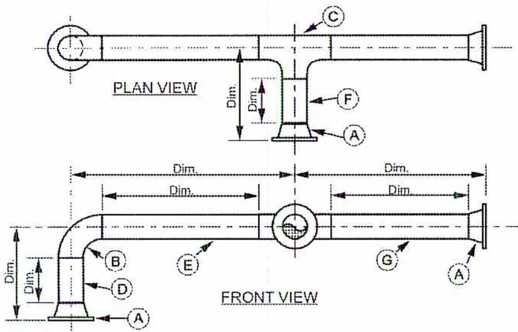
Figure 28
Double Line Orthographic Spool Drawing
Chapter Questions
B1.11
- 1. When is sectioning used in orthographic projections?
- 2. With reference to the pressure vessel drawing in Figure 16, what is the distance from the centre of nozzle N1 to the outside of the flange on N2?
- 3. What is the thickness of the steam drum and the mud drum in Figure 12?
- 4. Explain the difference between a process flow diagram and a process and instrument diagram.
- 5. What lists of symbols accompanies process and instrument diagrams?
- 6. Why do process and instrument drawings refer to isometric piping drawings?
- 7. Name the three forms used to draw piping spool drawings.
- 8. What is a bill of materials and when is it used?
- 9. What is the difference between an isometric and an oblique drawing?
- 10. Sketch the top front and side views of the four blocks shown below.
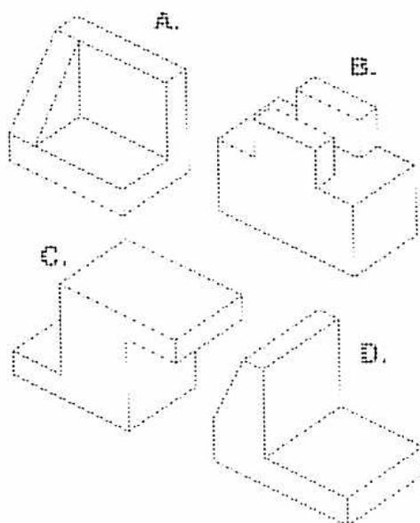
The image shows four isometric drawings of blocks, labeled A, B, C, and D. Each block is shown from a perspective view that reveals its top, front, and side faces.
- Block A: A rectangular block with a square cutout in the top-left corner. The cutout is deep enough to be visible from the front and side.
- Block B: A rectangular block with a stepped top surface. The top is divided into three levels: a central higher level and two lower levels on the sides.
- Block C: A rectangular block with a rectangular cutout in the front face. The cutout is centered horizontally and extends to the bottom of the block.
- Block D: An L-shaped block. It has a vertical rectangular section on the left and a horizontal rectangular section on the right, forming a right angle.